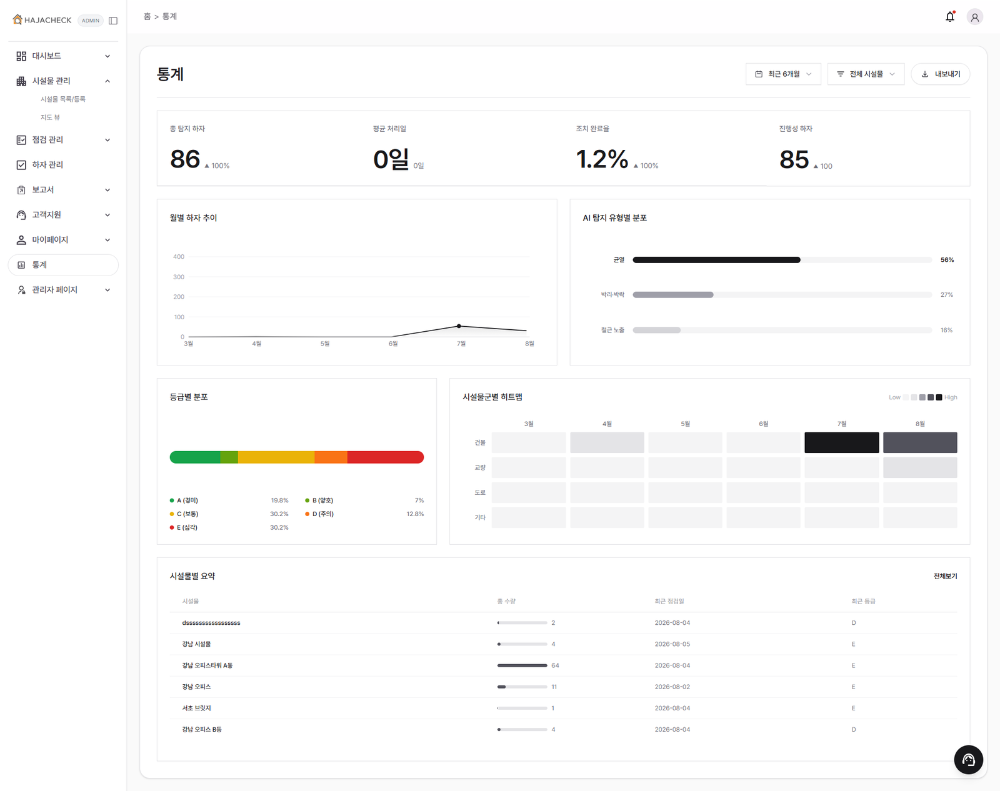

시설물 사진을 올리면 Vision 모델이 하자를 탐지하고, 등급을 매기고, LLM이 점검 보고서 초안까지 작성합니다. 저는 PM으로 설계와 일정을 맡으면서, 플랫폼 관리자 콘솔을 화면부터 API까지 직접 구현했습니다.
프로젝트 규모 — 팀 전체 기준
시설물 외관 점검은 지금도 사람이 현장에서 눈으로 보고 사진을 찍은 뒤, 사무실에서 보고서를 손으로 쓰는 방식입니다. HajaCheck는 이 과정에서 탐지·등급 산정·보고서 초안을 자동화합니다.
사진을 올리면 유형별 전용 Vision 모델(균열은 U-Net, 면적형 하자는 YOLO)이 균열·박리박락·철근노출을 탐지하고, 규칙 기반으로 A~E 등급을 매깁니다. 사람이 결과를 검수한 뒤, LangChain 기반 LLM이 점검 보고서 초안과 관련 법규 질의응답을 지원합니다.

전원이 화면·API·AI 연동을 직접 구현하는 메뉴 담당제로 진행했습니다. 저는 PM 역할과 함께 플랫폼 관리자 도메인을 맡았습니다.
PLATFORM_ADMIN 역할, 메뉴 접근 제어서비스를 운영하는 쪽에서 쓰는 화면 전체를 맡았습니다. 프론트엔드와 백엔드를 나눠 받은 게 아니라 화면과 API를 같이 만들었습니다.
| 기능 | 구현 범위 | 내용 |
|---|---|---|
| 사용자 관리 | 화면 + API | 기업·사용자 목록, 역할 부여, 등록·필터 |
| 플랜·쿼터 관리 | 화면 + API | 요금제 정책 편집, 사용량 한도 설정 |
| 서비스 통계 | 화면 + API | 기간별 KPI, 업그레이드 전환 지표 |
| 시스템 모니터링 | 화면 + API | 에러 로그·분석 잡 큐·서버 자원 실데이터 연동 |
| 권한 체계 | 백엔드 | PLATFORM_ADMIN 역할 신설, Security 권한 매처 |
| 기업 온보딩 | 화면 + API | 초대 코드 발급·사용, 좌석 검사, 가입 승인 |
사이드바와 관리자 메뉴가 프론트엔드에 하드코딩돼 있었습니다. 역할이 하나 늘거나 메뉴 노출 조건이 바뀔 때마다 프론트를 수정·배포해야 했습니다.
프로젝트 중반에 PLATFORM_ADMIN, COUNSELOR 등 역할이 계속 추가되는 흐름이 보였습니다. 이대로면 역할이 늘어날 때마다 배포가 필요한 구조가 굳어진다고 판단했습니다.
메뉴 정의와 역할별 접근 권한을 menus / menu_role_access 테이블로 옮기고, 프론트가 로그인 시 조회해 렌더링하도록 전환했습니다. 이후 메뉴 변경은 데이터 수정만으로 처리했습니다.
여러 기업이 한 서비스를 쓰는 구조라, 요청에 담긴 회사 식별자를 그대로 믿으면 다른 회사 데이터가 조회될 수 있는 위험이 있었습니다.
관리자 API에서 요청 값을 신뢰하지 않고 인증 주체의 소속을 서버에서 다시 확인하도록 하고, 조회 쿼리에 회사 스코프를 강제했습니다. 스코프를 벗어난 요청은 빈 결과가 아니라 명시적 예외로 처리해 문제가 조용히 묻히지 않게 했습니다.
권한 검사는 화면에서 메뉴를 감추는 것으로 끝나지 않습니다. 화면을 감추는 것과 데이터를 막는 것은 별개이고, 실제 방어선은 항상 서버 쪽 쿼리에 있어야 합니다.
전원이 화면과 API를 함께 만드는 방식이라, 담당자끼리 API 형태를 말로 맞추면 한쪽이 끝날 때까지 다른 쪽이 멈추는 상황이 반복될 수 있었습니다.
PM으로서 openapi.yaml을 단일 기준으로 두고, 스펙을 먼저 합의한 뒤 각자 구현하도록 했습니다. 스펙이 바뀌면 계약 문서를 먼저 고치고 알리는 순서를 지켰습니다. PRD도 구현이 진행되면서 실제와 어긋나면 v1.0 → v1.1로 실측에 맞춰 갱신했습니다.
문서는 써두는 게 목적이 아니라 다른 사람이 기다리지 않게 하는 도구였습니다. 실제와 어긋난 문서는 없느니만 못해서, 갱신을 미루지 않는 게 문서를 만드는 것보다 중요했습니다.
개인 과제와 가장 달랐던 점은 내 코드가 끝이 아니라는 것이었습니다. 관리자 콘솔 하나를 바꿔도 다른 담당자의 화면·API·DB에 영향이 갔고, 그래서 "무엇을 만들까"보다 "어떻게 합의하고 알릴까"에 시간을 더 썼습니다. PM 역할을 겸하면서 이 조율 비용이 실제 개발 속도를 좌우한다는 걸 체감했습니다.